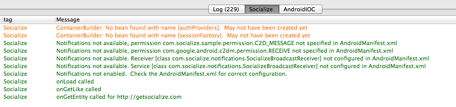

Troubleshooting & Support¶
Displaying debug logs in LogCat¶
If you’re having problems with loading the Action Bar, or errors at runtime the simplest way to diagnose these problems is via the debug logs in the Android LogCat display.
By default Socialize will only render logs of level WARN to logcat. To override this, simply add an entry to your socialize.properties file:
# Set to INFO or DEBUG to enable extended logging to logcat
log.level=DEBUG
Socialize will now render more details logs to the logcat console. All Socialize logs will be tagged with the word “Socialize” so you can filter them in the logcat display:
Enabling Diagnostic Logs¶
Note
SHOULD NOT BE USED IN CONJUCTION WITH DEBUG LOGS!!!
Enabling Diagnostic Logging can SEVERLY AFFECT PERFORMANCE and should only be enabled for specific users experiencing problems.
In some cases end users will experience problems that are not reproducible by you (the developer) during development or testing. In these cases it is often difficult to determine the cause of a problem chiefly due to the fact that local system logs on the device and typically not available in remote error reporting systems.
To overcome this Socialize has implemented a “Diagnostic Logging” mode which, when enabled, will duplicate any log entries produced by Socialize and write them to an external file stored on the user’s SD Card.
Enabling Diagnostic logging is a two step process:
Step 1 - Manifest Permissions¶
Your application will require access to the SD Card in order to write diagnostic logs
<manifest...>
<uses-permission android:name="android.permission.INTERNET"/>
<!-- Required for Diagnostic Logging -->
<uses-permission android:name="android.permission.WRITE_EXTERNAL_STORAGE"/>
<!-- Optional but recommended -->
<uses-permission android:name="android.permission.READ_PHONE_STATE" />
<!-- Optionally add ONE of the following to include location data in comments -->
<uses-permission android:name="android.permission.ACCESS_COARSE_LOCATION"/>
<uses-permission android:name="android.permission.ACCESS_FINE_LOCATION"/>
<application.../>
</manifest>
Step 2 - Enable Logging¶
Diagnostic Logging can be enabled/disabled via ConfigUtils
Note
Enabling Diagnostic Logging can SEVERLY AFFECT PERFORMANCE and should only be enabled for specific users experiencing problems.
// Enable diagnostic logging
// This will clear any previous log entries.
ConfigUtils.getConfig(this).setDiagnosticLoggingEnabled(this, true);
// .. some time later...
// Disable diagnostic logging
// Previous log entries will be retained.
ConfigUtils.getConfig(this).setDiagnosticLoggingEnabled(this, false);
Reviewing Logs¶
When you want to be able to view the log file(s) created and would like to have the logs sent to you simply call the method provided by Socialize
// Send logs via email
SocializeTools.sendExternalLogs(this);
This will present the end user with their default email client together with an attachment containing the logs.
Cleaning up Logs¶
You can also optionally delete any previously created log files
// Send logs via email
SocializeTools.deleteExternalLogs(this);
Common Problems¶
Action Bar is does not display¶
This is most often a result of mis-configuration in either the AndroidManifest.xml, or in your socialize.properties file. In most cases the debug logs should give you an indication of the problem. Refer to the above Displaying debug logs in LogCat section for details on displaying debug logs.
Action Bar is pushed up by keyboard¶
If you are already using a ScrollView in your layout you may have noticed that when entering text the ActionBar is “pushed up” by the soft keyboard like so:

You can correct this by setting android:isScrollContainer=”false” in the declaration of your ScrollView
<ScrollView
android:layout_width="fill_parent"
android:layout_height="fill_parent"
android:isScrollContainer="false">
...
</ScrollView>
Action Bar doesn’t fit (appears unusually large)¶

If your action bar appears too large for the display the most likely culprit is a rogue anyDensity setting in your AndroidManifest.xml
If you have the following setting in your manifest:
<supports-screens android:anyDensity="false"/>
This will need to be changed to:
<supports-screens android:anyDensity="true"/>
Or just removed completely as false is the default value for newer (1.6+) Android versions.
Auth Failure on Twitter¶
If you encounter the following error when attempting to authenticate with Twitter:
Authentication error: Unable to respond to any of these challenges: {oauth=WWW-Authenticate: OAuth realm="https://api.twitter.com"}
This usually means you have not configured a Callback URL in your Twitter app. Review the Twitter Integration section for details on adding a callback url.
Support and Feedback¶
For direct access to our support team you can post questions on our support system here: